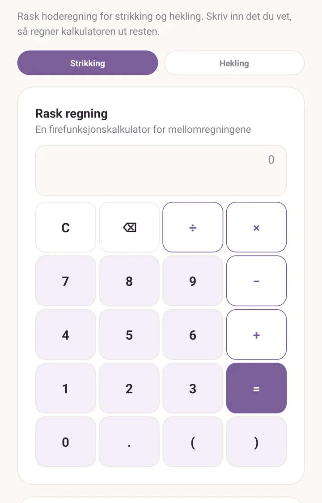
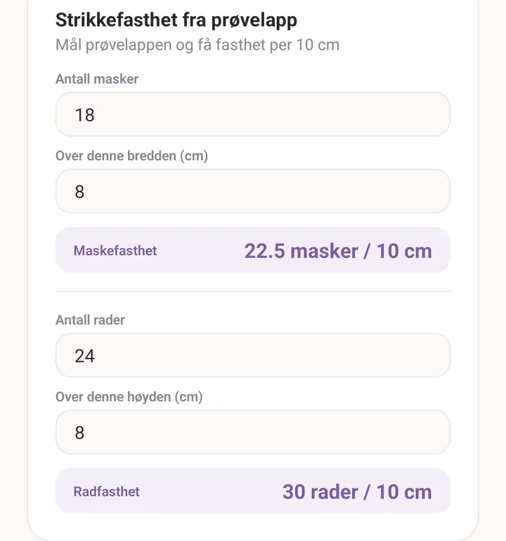
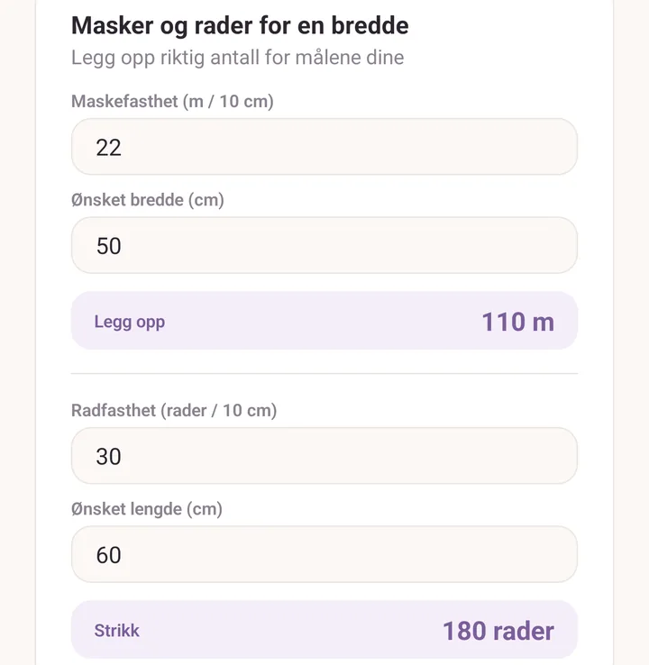
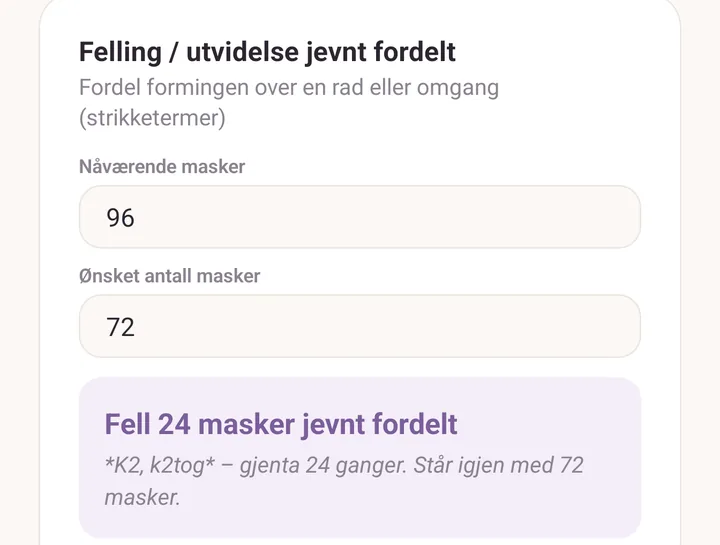

Kalkulator
Seks små verktøy på én rullende skjerm. Skriv inn det du vet, og svaret dukker opp under mens du skriver. Det finnes ingen regne-knapp og ingenting å tømme: fyll ut det ene kortet du trenger og la resten være.
På denne siden 9
Slik åpner du den
- Mer, og så Strikkekalkulator i bolken Verktøy.
- Verktøyet Kalkulator i verktøyvifta i PDF-leseren, så du kan regne ut et tall uten å forlate oppskriften.
- Kalkulatorikonet øverst i oppskriftsleseren.
- Bruk i kalkulator på fasthetsraden i et prosjekt. Den åpner med fastheten du har notert allerede utfylt.
Uansett hvilken vei du kommer inn, er det den samme skjermen.

Strikking eller hekling
Øverst: Strikking og Hekling. Den starter på standardhåndverket ditt, satt i Innstillinger.
Valget endrer ordbruken to steder: Strikkefasthet fra prøvelapp spør etter masker eller etter masker arbeidet som fastmasker eller staver, og Felling / utvidelse jevnt fordelt skriver svaret sitt i strikkeord eller i hekleord.
Kalkulatoren regner i centimeter, og i meter for garnlengder.
Rask regning
En kalkulator med fire regnearter og parenteser, for mellomregningene ("3 nøster à 175 m"). Den takler pluss, minus, gange, dele, desimaler og negative tall. Det finnes ingen vitenskapelige funksjoner.
Strikkefasthet fra prøvelapp
Du har strikket en prøvelapp. Denne gjør den om til en fasthet per 10 cm.
- Antall masker, og Over denne bredden (cm).
- Antall rader, og Over denne høyden (cm).
Du får Maskefasthet og Radfasthet, hver per 10 cm. De to halvdelene er uavhengige, så du kan fylle ut den ene og la den andre stå tom.
Mål over et så bredt stykke av prøvelappen du klarer. Å telle 18 masker over 8 cm gir et riktigere tall enn å telle 5 over 2 cm.

Masker og rader for en bredde
Den de fleste vil ha først: hvor mange masker legger jeg opp for å få den bredden jeg vil ha?
- Maskefasthet (m / 10 cm) og Ønsket bredde (cm) gir deg Legg opp.
- Radfasthet (rader / 10 cm) og Ønsket lengde (cm) gir deg Strikk, i rader.

Tilpass en oppskrift til din fasthet
For når oppskriftens fasthet ikke er din, og du vil ha oppskriftens ferdige størrelse likevel.
- Maskeantall i oppskriften, tallet oppskriften ber deg legge opp.
- Oppskriftsfasthet (m / 10 cm).
- Din fasthet (m / 10 cm).
Du får Legg opp i stedet, pluss en merknad om hvilken bredde det beholder.
Felling / utvidelse jevnt fordelt
Du har et maskeantall og trenger et annet, jevnt fordelt over en rad eller omgang.
- Nåværende masker.
- Ønsket antall masker.
Svaret kommer ut som en instruksjon du kan arbeide rett fra, i ordene til håndverket du valgte øverst, for eksempel en rapport med k2tog for strikking eller en felling over to masker for hekling. Der rapportene ikke går opp jevnt, sier den hvilke av dem du skal arbeide én maske lengre, så fasongen holder seg jevnt fordelt.
Hvis endringen ikke får plass over maskene du har, sier den fra i stedet for å gi deg et tall som ikke lar seg arbeide.

Nøster du trenger
- Totalt behov (m), fra oppskriften.
- Lengde per nøste (m), fra banderolen.
Du får Kjøp, rundet opp, med en påminnelse om å ta med ett ekstra hvis fargepartiet betyr noe. For en genser i én farge er ett ekstra nøste billig forsikring; å matche et fargeparti i ettertid går som regel ikke.
Se også
- Prosjekter: notere den fastheten du faktisk fikk, og snarveien Bruk i kalkulator.
- PDF-verktøy: kalkulatoren inne i verktøyvifta.
- Stash: hva en banderole forteller deg.